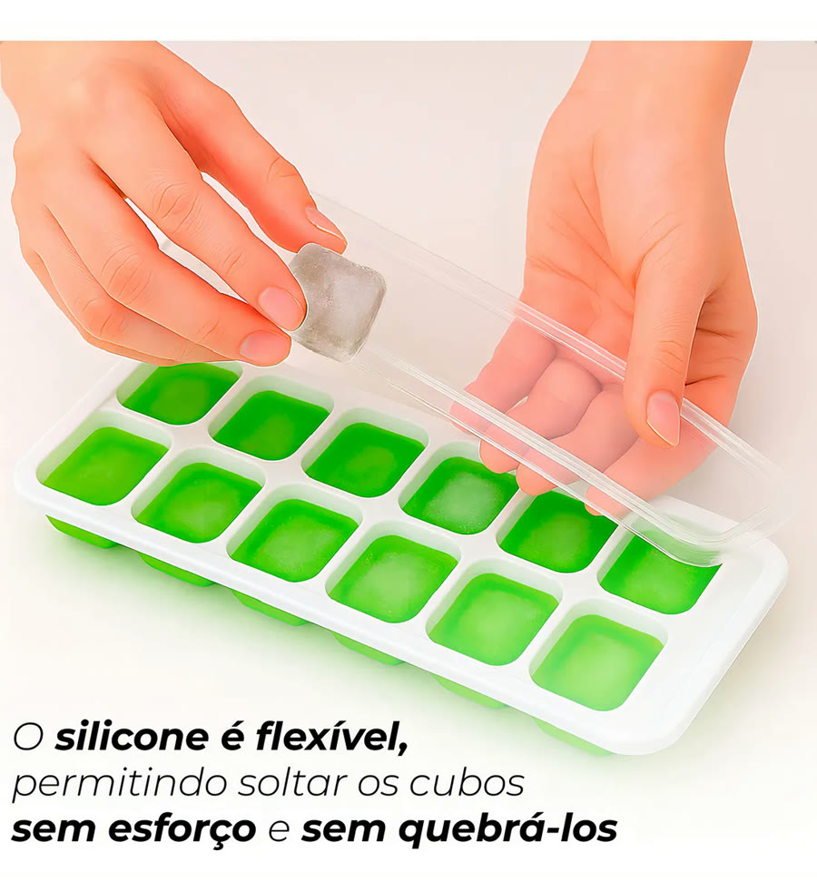
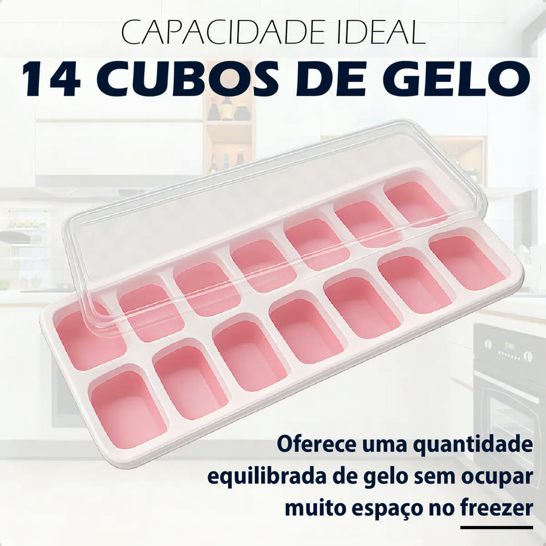
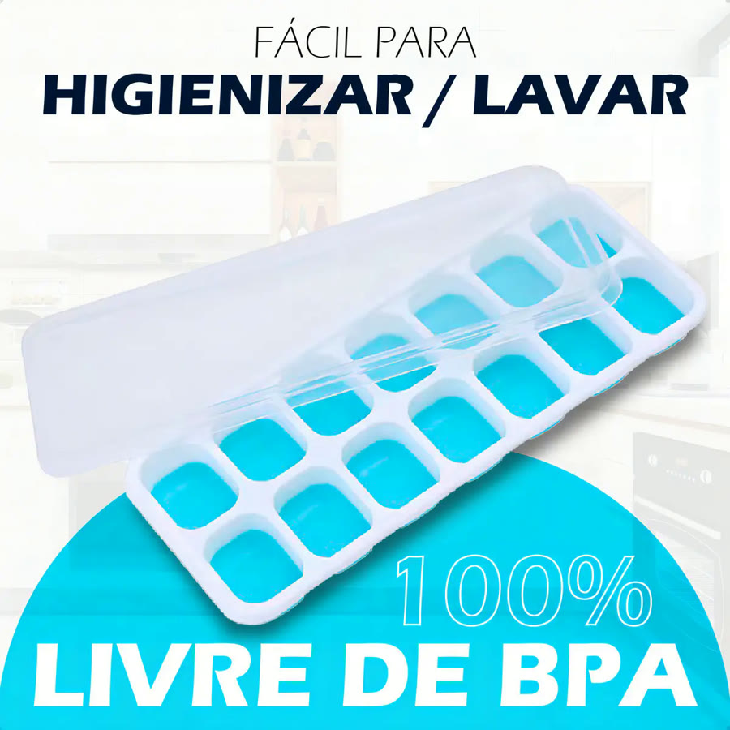
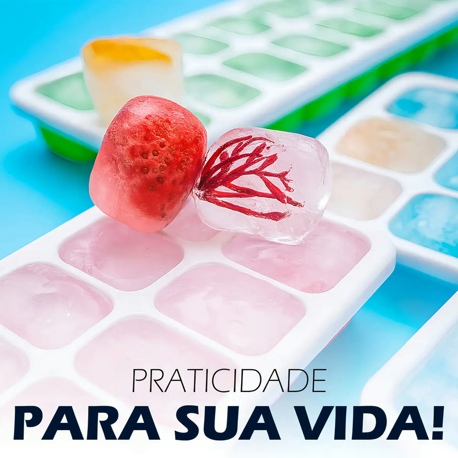
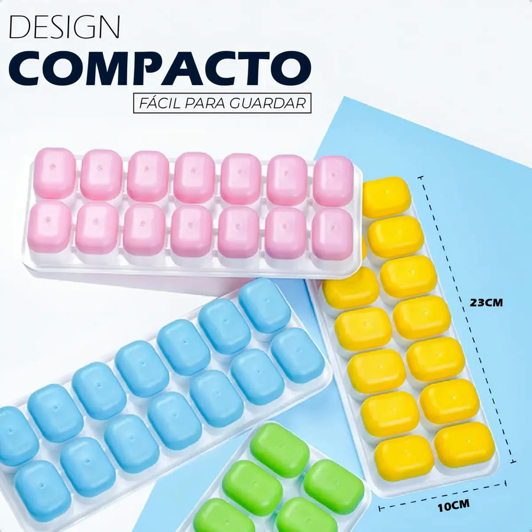

Achado nº 50
Kit 4 formas de gelo com fundo de silicone e tampa (14 cubos cada)






O que diz a página oficial do produto
- É um kit com 4 formas de gelo, nas cores verde, azul, amarelo e rosa
- Cada forma faz 14 cubos de gelo
- O fundo é de silicone flexível; segundo o anúncio, é para soltar os cubos sem esforço
- Cada forma tem uma tampa rígida; segundo o anúncio, a tampa evita derramar e deixa empilhar no freezer
- Segundo o anúncio, também dá para congelar sucos, molhos, caldos e ervas
- No Mercado Livre, tem nota 4,8 com mais de 3.700 avaliações e mais de 10 mil vendidos
Link de afiliado: se você comprar por ele, a Achadaria pode receber uma comissão, sem custo extra para você. Preço, estoque e entrega são da loja e podem mudar; confira lá antes de comprar.